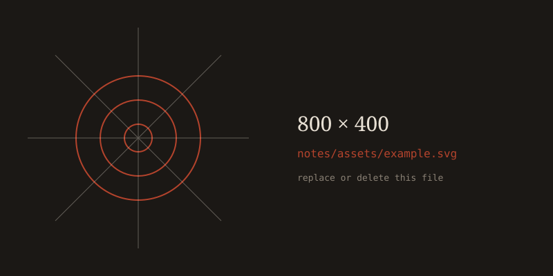

2026-09-29
Post title
A one-line summary, set in italic to set it apart.
Body text goes here. Set in Bodoni Moda because nothing stops you from doing that. Resize the window — the type reflows on its own.
Pull quotes look like this, and you can have as many as you like.
A subheading
Markdown is not required and not used. This is plain HTML, so
inline code and blocks like this one work without a build step:
def notes() -> str:
return "no build step"Column one
Anything you want here.
Anything you want here.
Column two
Including this.
Including this.


| Key | Value |
|---|---|
| anything | goes |